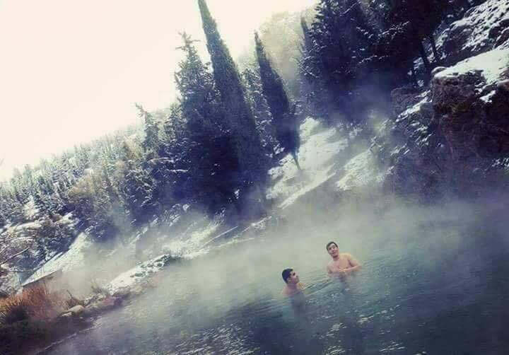

places to see absolutely
The Sidi Ghanem Mosque
 The Sidi Ghanem Mosque, built by the companion Abu al-Muhajir al-Muhajir, in the year 59 AH, corresponding to the year 678 AD, is one of the old mosques that still flourish in the smell of Islamic conquests in Algeria.Saints in the city of (Moël) in Paris capital.Let us know where you are in your country.And may be intensive with the funeral and the period of pregnancy and tests If a mosque (Sayed Ghanem) is a great place in the world, during the concerts held in 1968 a Christian Roman church was discovered under the ruins of the Islamic arches of the mosque.The city embraced the cemetery of the first religious bodies in 402 AD and the second in 416 AD and the last of St. Austen, where the Christianization movement was especially prevalent after the defeat of the Vandals by the Byzantines, which lasted for four years. The construction of a mosque (Sidi Ghanem) built in the march (Madam) The conversion of a mosque (Sidi Ghanem) and Muhammadiyah walls to him. The four military barracks and walls were occupied during the French colonial period. ) In particular.
The Sidi Ghanem Mosque, built by the companion Abu al-Muhajir al-Muhajir, in the year 59 AH, corresponding to the year 678 AD, is one of the old mosques that still flourish in the smell of Islamic conquests in Algeria.Saints in the city of (Moël) in Paris capital.Let us know where you are in your country.And may be intensive with the funeral and the period of pregnancy and tests If a mosque (Sayed Ghanem) is a great place in the world, during the concerts held in 1968 a Christian Roman church was discovered under the ruins of the Islamic arches of the mosque.The city embraced the cemetery of the first religious bodies in 402 AD and the second in 416 AD and the last of St. Austen, where the Christianization movement was especially prevalent after the defeat of the Vandals by the Byzantines, which lasted for four years. The construction of a mosque (Sidi Ghanem) built in the march (Madam) The conversion of a mosque (Sidi Ghanem) and Muhammadiyah walls to him. The four military barracks and walls were occupied during the French colonial period. ) In particular.
Old Tawn Mila
 The city of Mila, east of Algeria, is home to one of the most important archaeological sites dating back to the Neolithic period. It hosts the site of the ancient town of Mila, or as its children call it, prehistoric monuments and others. What distinguishes the ancient city of Mela is that it mixes many of the relics that date back to different periods, which remained a witness to the passage of the Nomads, followed by the Romans, the Vandals, the Byzantines and the Arab Muslims, as well as Ottoman and modern French architecture.
The city of Mila, east of Algeria, is home to one of the most important archaeological sites dating back to the Neolithic period. It hosts the site of the ancient town of Mila, or as its children call it, prehistoric monuments and others. What distinguishes the ancient city of Mela is that it mixes many of the relics that date back to different periods, which remained a witness to the passage of the Nomads, followed by the Romans, the Vandals, the Byzantines and the Arab Muslims, as well as Ottoman and modern French architecture.
Hot water springs
Mila knows as the state of 1000 springs because it contains many natural water springs throughout the state It contains many natural water springs throughout the state, most of which are safe to drink and others are hot water suitable for bathing, where you can shower in nature or in the private baths can exploit the springs and the best springs "Beni Haroun" baths, "Tealagmah" baths, "hamam Oued Athmania" (hamam groz)